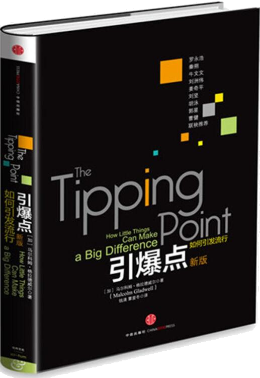

注：【】部分为笔者心得，非原文摘抄。
- 流行三法则：个人人物法则、附着力因素法则和环境威力法则。
- 信息有了附着力就意味着它会对人产生影响，你就不能把它从你的脑海中赶出去。
- 在很大程度上，发起任何一种社会流行的成功要素取决于信息传播者所特有的社交天赋。
- 联络员应该是大家用不了几步就能找到的人。
- 对于联络员来说，他们之所以能跨入许多不同的领域时期天性在发挥作用，这种天性集好奇、自信心、好交际和活力于一身。
- 快速口头信息传播只有联络员才能做到。
- 内行与众不同的关键之处在于，他们并不是被动地收集信息。
- 非文字性暗示与文字性暗示同样重要，甚至更重要。
- 说服工作往往是通过大家不喜欢的方式发挥作用的。
- 互相模仿对方表情是表达支持和关心的一种方式。
- 情绪具有感染力。
- 任何人至少要看 6 遍广告，才能记住其内容。
- 一旦建议变得实际而且符合个人需要，它就会令人难忘。
- 信息混杂现象会使任何一则信息都越来越难产生附着力。
- 如果你能控制住孩子们的注意力，就能教育好他们。
- 电视是一种视觉媒体，要想使它深入人心，就必须利用其对视觉的作用。
- 在适当情况下，总是存在一种简单的信息包装方法，使信息变得令人难以抗拒。我们的任务就是要找到这种包装方法。
- 环境威力法则的意义在于我们对环境的改变不只是敏感，而是极度敏感。
- 在解读别人的行为时，人们总是爱犯一种错误：高估性格因素，而低估具体情形和环境因素。
- 一个人的信仰和思想在指导行为的过程中并不像行为发生的具体环境所施加的影响那样重要。
- 要想使人们的信仰和行为发生根本的变化，而且要让这种变化能够持续存在，并成为更多人效仿的榜样，就必须建立一个社会团体或组织，在这个团体或组织里人们可以互相交流、实践或培养自己的这些信念。
- 认知心理学中的“通道容量”是指大脑在接受某些信息时具有的记忆空间。
- 要成为最有战斗力的组织单位，成员人数就不能超过 150 人，否则很难使成员达到彼此熟悉默契的成都，从而成功地协同作战。
- 把高度专业化的观念和信息转换成普通大众能够明白的语言。
- 关键就在把握时机。
- 要想发起流行潮，就必须做到把有限的资源集中到关键方面。
- 世界并非是我们一厢情愿的直觉中的世界。
- 成功发起流行潮最重要的因素是要具备一个基本的信念：制造变化是可能的，人们是能够在一些特定力量的驱使下骤然改变自己的行为和观念的。